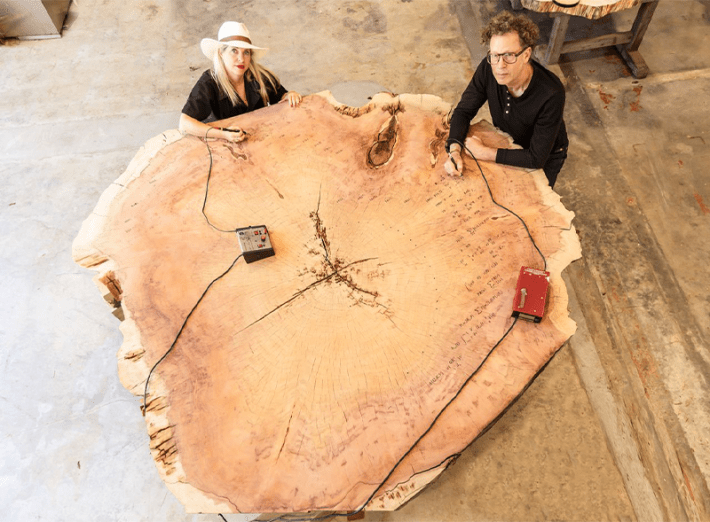
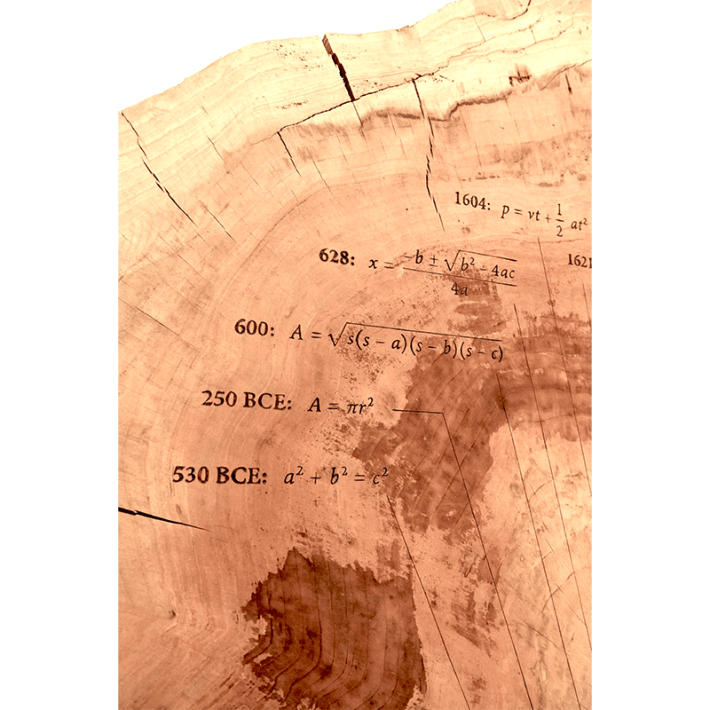

Tree-rings are like time machines. They tell ancient stories about the Earth and its climate, marking wet years, dry years, and periods of growth. Artist Tiffany Shlain and her husband, roboticist Ken Goldberg, decided they would make a perfect canvas for a set of artworks that explore the ways art and science are embedded in nature.
Together, they collected giant cross-sections of already harvested trees from salvage yards and used them to create a series of tree-ring sculptures, carving inscriptions in the wood: notes about the human quest for knowledge and historical timelines going back thousands of years. These sculptures are featured in a show they put together for the Getty Museum’s Art and Science Collide program titled Ancient Wisdom for a Future Ecology: Trees, Time, and Technology.

ABSTRACT EXPRESSION:Artist Tiffany Shlain and her husband, roboticist Ken Goldberg, inscribe equations in the shape of a golden spiral on a slab of redwood. Photo by Stefanie Atkins Schwartz.
One of the most intriguing pieces in the show is titled “Abstract Expression.” A giant slab of redwood shows a series of 39 equations, which charts the progress in mathematics from Pythagoras to ChatGPT. The timeline takes the shape of a golden spiral, a mathematical relationship found often in natural structures such as the nautilus shell, and associated with great beauty. The properties of the golden spiral, and the golden ratio upon which it is built, have been debated by some of the greatest mathematical minds of all ages, from Pythagoras and Euclid in ancient Greece to present-day scientific figures such as Oxford physicist Roger Penrose.
Shlain and Goldberg say they wanted to bring to life the idea that both art and math are abstractions—ways of describing the natural world without language. “These symbols can say so much so concisely without any words,” Goldberg says. “So they are like art in that they convey meaning in a visual form. It's a language, but it's a different language than text.”

SYMBOLISM: Equations shown here, from bottom to top, are the Pythagorean theorem, the area of a circle, Heron's law, the quadratic formula, and Galileo's equation of motion. Photo by Stefanie Atkins Schwartz
The shape of the salvaged redwood used in “Abstract Expression” helped Shlain and Goldberg to determine what to inscribe on it. They were studying the piece—the biggest they had collected—when they noticed something. “It had these sharp edges, which none of the other tree rings in the show have,” says Shlain.
To the artists, the tree's rough angles—created in the salvage process—seemed to echo the basic foundations of math. They started thinking about geometry and the math of straight lines. More than 2,000 years ago, the Greek mathematician Euclid observed the most basic relationships of shapes, lines, and figures in two dimensions. “The shape of the tree ring that came from the salvaged wood informed our thinking around the piece,” Shlain says.
The artists left space to add more dates to the timelines at the outer edges of the tree rings, a gesture towards our uncertain future. “These trees live in a deep past that we don't know,” says Shlain, “and they will be alive in a deep future.”
The exhibition is on display through March 2 at the Skirball Cultural Center in Los Angeles, and will then move onto the San Francisco Bay Area’s di Rosa Center for Contemporary Art. 
Lead photo courtesy of Ken Goldberg and Tiffany Shlain.
Källförteckning
- Originalartikel: https://nautil.us/the-language-of-tree-rings-1192018/